Section 4 goes from Colter Bay, (30km south of where I had the cabin) to Wamsutter, at the south end of Wyoming. This section has some diverse terrain, starting in the lush Grand Teton National Park, and carrying on through the dry and desert like Great Divide Basin.
I had to get my moneys worth from the cabin so I slept in and stayed in the cabin right up until checkout at 10. After checkout, I went back to the campground restaurant and enjoyed another all you can eat breakfast. Feeling rested and fueled up, I carried on through the park. The entire route today went over pavement, running on the shoulder of the highway and switching over to a bike path closer to Jackson. Although it was a Wednesday, it was still vacation season, and the highway running along Jackson Lake was quite busy with traffic. There were times where the shoulder got narrow, but drivers were nice and gave plenty of space. The larger RVs gave warning honks when they were coming up as well which I appreciated. Rain was on and off all afternoon.
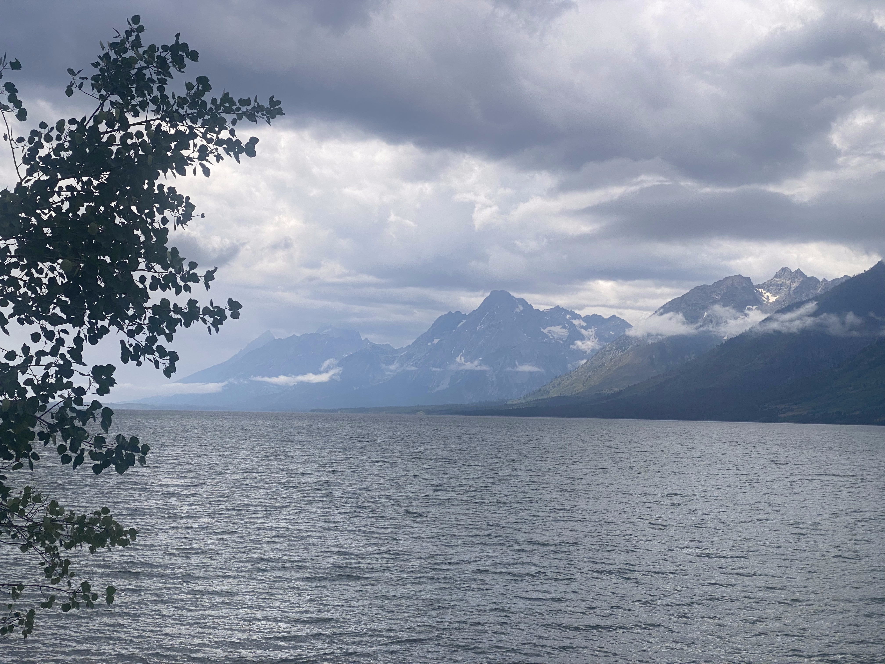I stopped for a quick break at the Colter Bay Village store to pick up lunch and snacks, then set my sights for a lake right beside Grand Teton to eat what I bought. I tried cutting through some of the trails near Colter Bay, but those were recently closed off to bikers, allowing only horses and pedestrians, so I backtracked to the highway. After leaving the cover of the trees on the main highway and turning onto the park access road, I was blasted with a headwind. With nowhere to go but forward, I put my head down and pedalled on. There were pockets of trees here and there that shielded me from the wind, but for the most part, what felt like 30 km/h effort got me going 20 km/h. After struggling through the headwind, I made it to Jenny lake, at the foot of Grand Teton, and had myself some lunch with a view.
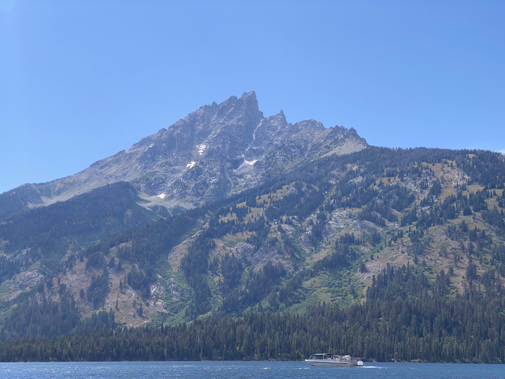After lunch, I noticed some creaking coming from my chainring, and saw my chain was quite stretched. I checked the hours for a bike shop in Jackson, and would be cutting it close if I wanted to make it there tonight. The pace was tough, but realistic given the path I would be riding is paved. The creaking was worrying me since I replaced all the drivetrain components right before this trip, and I didn't want to have to do that again. While I wasn't stressing about the chainring, I appreciated the views of the Teton valley. I have driven through this area a couple of times and it was nice to have more time to soak in the scenery from a bike.
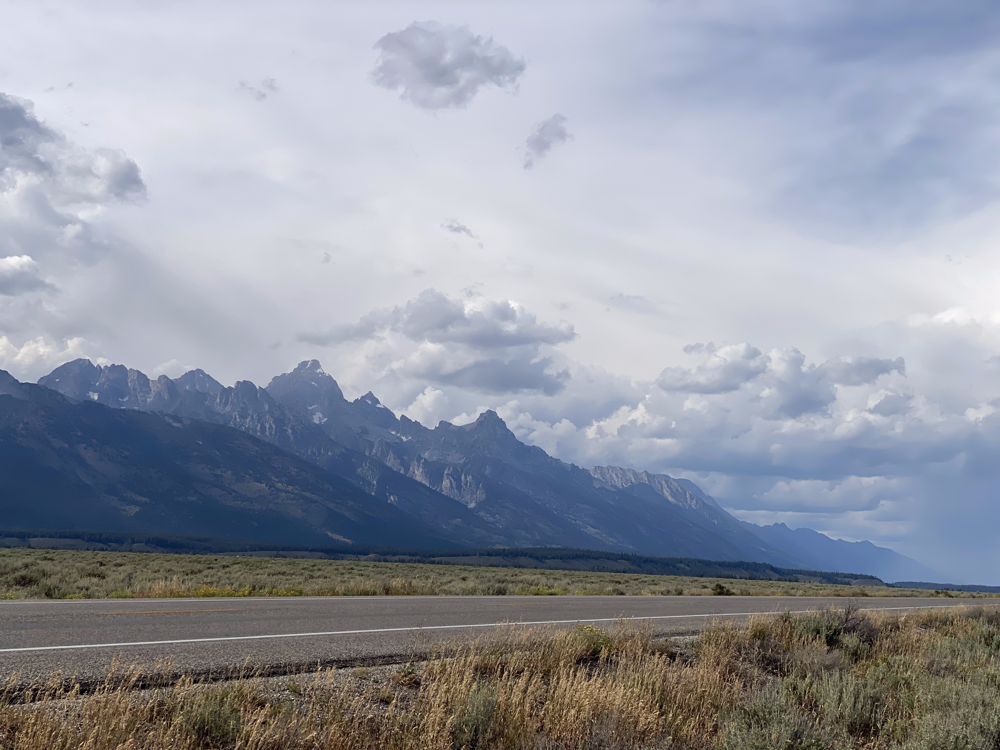With 15 minutes to closing, I made it to the bike shop and they threw on a chain for me after confirming that my chain was very very stretched. I was deviating a bit from the route at this point, so I did some searching for camping spots along the road I was taking. About 40 km out of Jackson, there was a FCFS campground right next to the highway. I rode out of Jackson at around 7:00 pm. It got dark fast with about 20 km to go, so I threw on my headlamp, turned on the lights on my bike, and listened for cars coming up behind me. The road was super quiet, with only two or three cars passing during this stretch. I eventually made it to Hoback Junction campground, and luckily there was a spot available. Trying to be as quiet as possible, I cooked up some dinner, set up my tent, and went to sleep.
I woke up at around 8 and had a slow morning. Today was going to be nothing but pavement again. Earlier, I had ordered some pannier bags to arrive at Pinedale, the next town along the route. That was my goal for today, which gave me 90 km to bike. Unfortunately, the post office closes at 4 pm, so I was a bit rushed to get there. The first 40 km was a gentle climb along a quiet paved road. The valley was wide so I got nice views of the surrounding mountains. At the top of the climb, I stopped at a gas station for a quick snack, then continued on downhill. The rest of the day was fairly quiet. I saw a couple of hikers who were doing the CDT walking along the highway. I was in a bit of a rush as I got closer to Pinedale, but the slight downhill helped me to make up time. All the rushing was for nothing. Although my package was supposedly at the post office, it was not ready for pickup. Slightly disappointed, I went to the town campground to set up for the night. I wanted a hotel but couldn't justify it after spending so much on the bags. Once I got to the campground, a heavy rain came out of nowhere. Since I didn't have anything set up, I decided to wait out the rain so that my gear would at least stay dry. I hid under one of the pine trees for 10 minutes until the rain calmed a little. While I was setting up camp, a hiker from Colorado came to the campsite and set up next to me. He was really into thru hiking and has done trails like the CDT in the past.
I went into town for dinner after I finished setting up. I found a good spot for Mexican food and enjoyed some enchiladas and a margarita. I stopped for some groceries on my way back to camp and saw a couple of the guys I met in Helena! We chatted and I found out that I stopped at the same campground as them the previous night. I just didn't notice since I got in after they were all asleep. We were all planning on leaving Pinedale tomorrow so it would be the perfect chance to start riding together. We tried to plan a time for the next morning but they were planning on leaving a bit earlier than I wanted to. I would just try to catch up to them throughout the day. We parted and I went back to camp for the night.
There was a laundromat in town so I did some laundry while waiting for the post office to open. I've been meaning to wash my sleeping bag for a while at this point, so I was considering it all morning. After a load of indecision, I committed to washing it. I got some down cleaner at the outdoor store, hand washed the bag, then brought it to the laundromat to dry. I spent the rest of the day adding quarters to the machine and killing time in town. I went to the bike shop as well to pick up a spare tire. The bag was fully dry by around 6:00pm. I knew I wasn't going to catch up to the group at this point, but I needed to put some distance in anyways, so on I went.
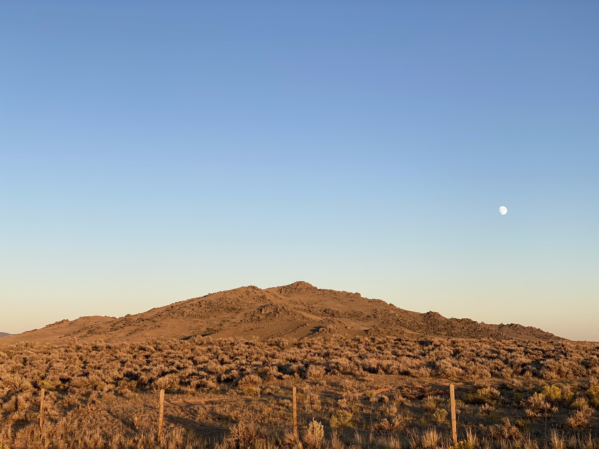 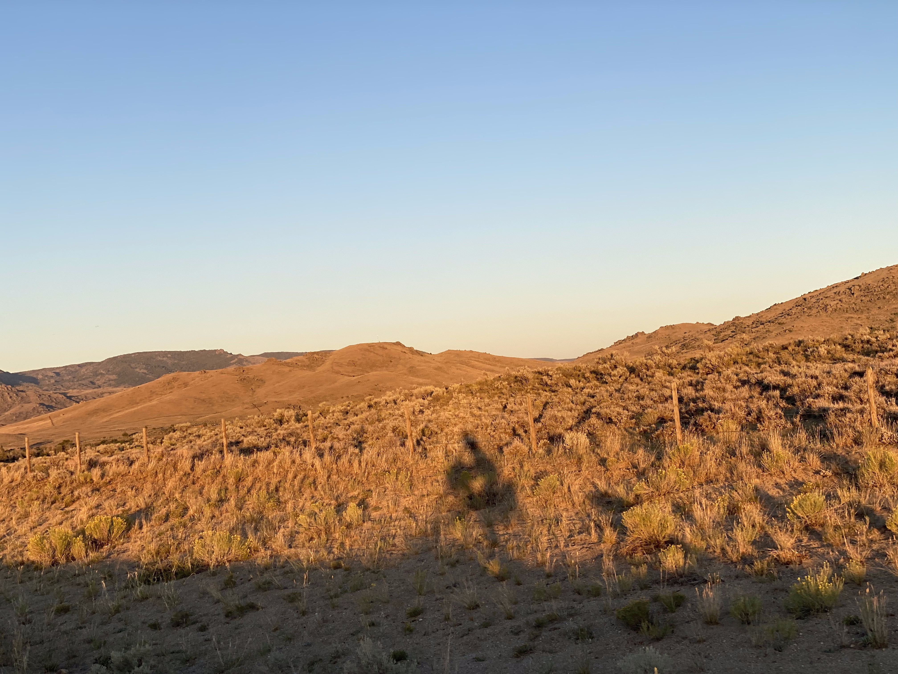I had a gorgeous sunset to ride in as I left Pinedale and went back into ranchlands. I soon turned off the main highway and onto a small two lane road. It was fully dark out by the time I reached gravel again. Luckily, the moon was full, and there wasn't a cloud in the sky. I could pretty much ride without a headlamp and still see my shadow. Normally I am pretty spooked about riding in the dark, but this road was out in the open so I knew nothing was hiding behind any trees. All I could see were a few cows in the surrounding fields. This was one of the most memorable moments of the entire trip, everything was so quiet and peaceful, the temperature was perfect, and there was zero wind. Some small clouds appeared but never blocked out the moon, they just added to the scenery. A few times I spotted a mouse or bunny scurrying across the road. I biked in the dark until 11:30, and came across a nice hill near some trees where I could set up the tent away from the road. I had some podcasts downloaded which kept me sane while I set up my tent and cooked some rice.
Intent on catching up to the guys I met in Helena, I got packed up and hit the road fairly early. I got most of the way up a climb the previous night, so the morning was spent rolling up and down small hills through the valley. About 20 km in, I found Brian and Kelly camping on the side of the road, with another biker. His name was Tally. We met briefly before in Helena while I was waiting for my delivery. After a quick stop, I let them get on with packing and carried on.
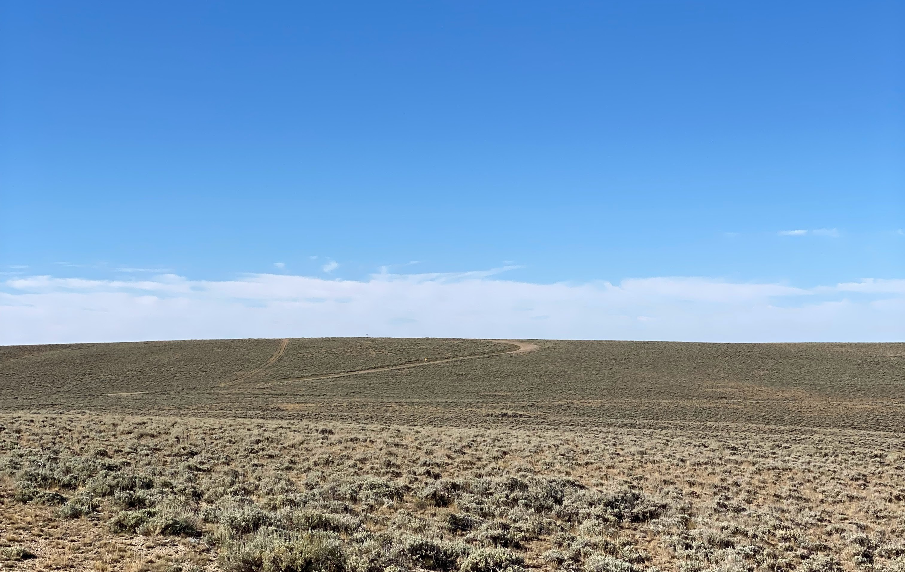 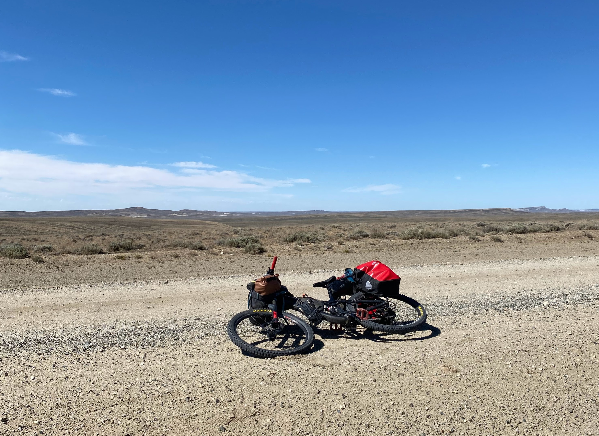When the gravel road reached the highway, I stopped for a break. While stopped, a truck pulled up beside me. The couple inside offered me some water, which I accepted this time. It was much cooler than the water I had in my backpack. They were out in the basin searching for fossils. I told them about my trip, and they wished me luck. After the highway, the trail continued through two gold rush towns. South Pass City and Atlantic City. I got some lunch at the one restaurant in Atlantic City, which still allowed smoking inside.
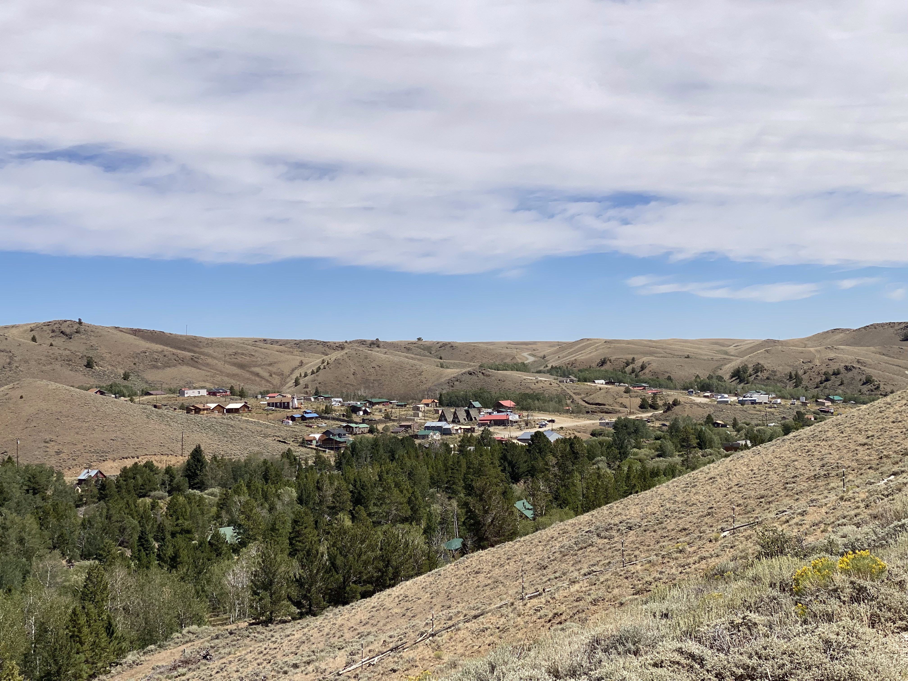After lunch, I climbed out of Atlantic City, and into the most remote stretch of the basin. I was feeling sleepy after eating and wanted to take a nap, so I stopped when I came across a river. I laid out my tent tarp and closed my eyes. I got to close my eyes for five minutes before a storm started up and threatened to blow my tent away. I tried hiding under the bridge going across the river, but mosquitoes owned that area. I really just wanted to nap. After looking at the map of the route, I decided to just set up camp next to the river, since it was the only guaranteed water source for a while. It would make cooking easier, and allow me to start the basin with my water completely full. I was happy with the decision since the rain kept coming back all evening and I had the tent to hide in.
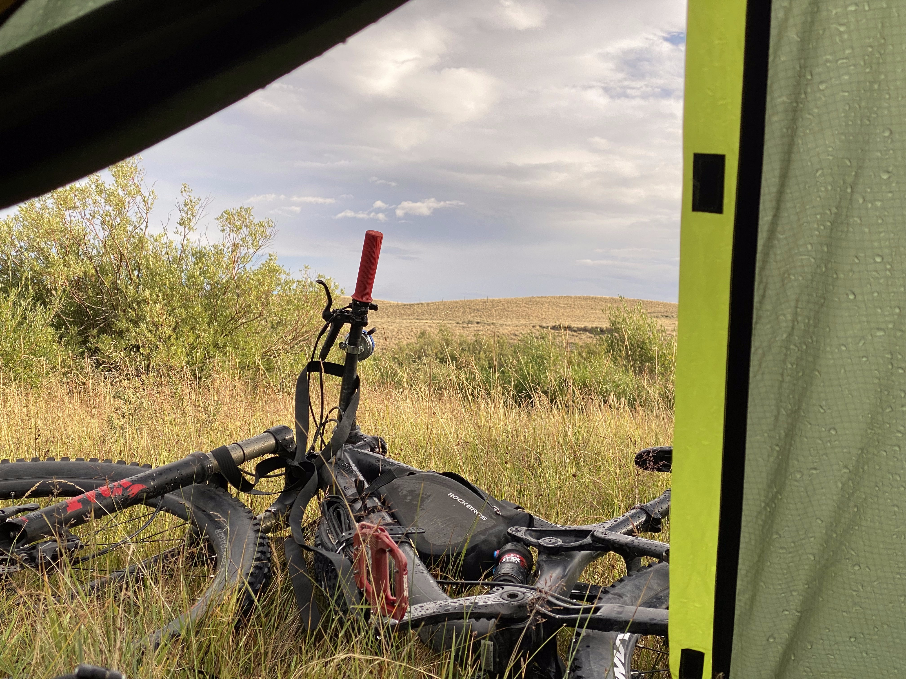I feel like I got the full basin experience from this day. It was hot, dry, windy, and desolate. The only signs of life were a few cows and a few pumpjacks. To kick off the day, I got a flat tire that was very persistent. It took two stops and one and a half bottles of sealant before it stopped leaking. With that fixed, pedalling suddenly felt a lot easier! I was trying not to push myself so that I wouldn't sweat. I had no idea if there would be any spots to refill my water until Wamsutter. In an attempt to keep my water cool, I wrapped it in a jacket, but with the sun hitting it, the pannier was pretty much an oven.
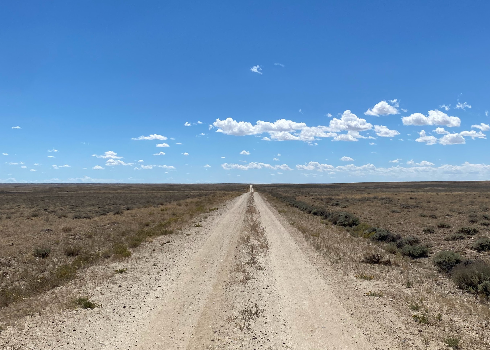Luckily, most of the road was in great condition. There weren't many rough or sandy sections. I came across two bikers heading north. It was nice to see some other humans after being alone for so long. One of the bikers was from Calgary as well! We exchanged info and told each other what to look forward to. As the day went on, I started to run out of water, eventually using what I had left to make some very tasty gatorade. I checked in with the bikers from Helena and it turned out that they were taking a slightly different route from me. They went further East into a town called Rawlins, along the same East-West highway as Wamsutter. With how my legs were feeling and how much water I had left, there would be no way I could tack on the extra distance to make it there, so I stuck to my original destination. I puttered into town with almost nothing left in the tank, and treated myself to a motel room for the night.
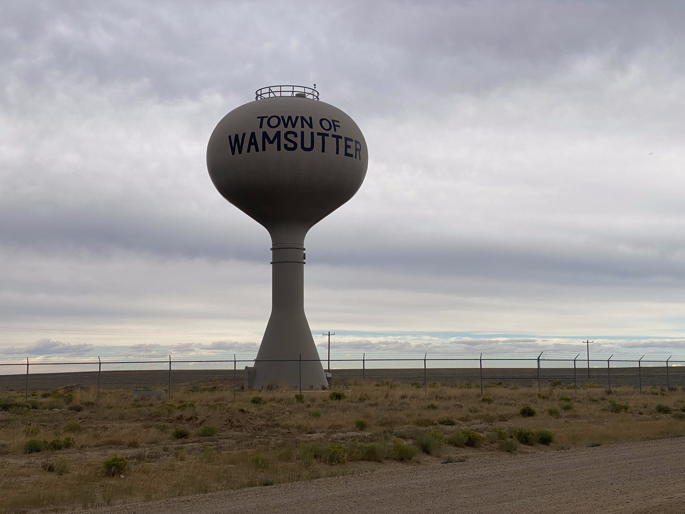Continue reading about the next section of my trip here!